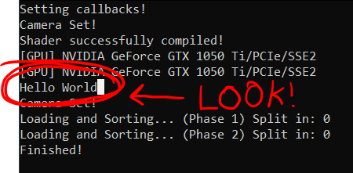
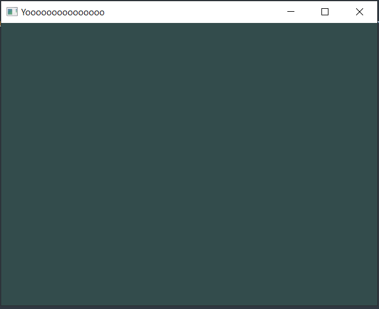
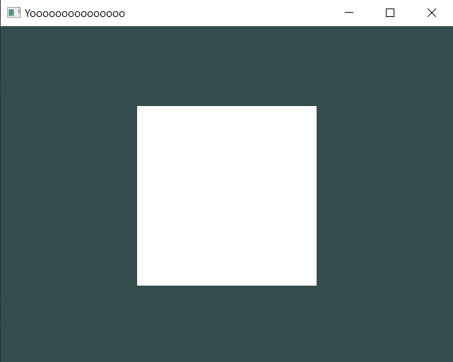

Geometria Engine
What is the Geometria Engine?
Geometria is a multipurpose engine (mostly used for games, but can be used for making all kinds of programs/applications) that it focuses on:
- Bringing high fidelity graphics on low-end devices (and expand the capabilities on high-end devices).
- Allowing the developer/programmer/user as much control as it can from the engine.
About Geometria
Graphics
This engine comes with a rendering system that instead of deleting data and generating new one each frame, it recycles data from the last frame and modifies the data that changed. With this you can save a lot of CPU power and being able to build from small, to big and complex scenes without sacrificing detail and performance.
Control
In most game engines, by default they do most of the tasks for you. But sometimes those tasks don't work in specific cases or make things worse, and those systems aren't flexible enough overall, and in the worst case scenario, you can't go inside the code and edit, modify or create according what you need, forcing developers to start "micro-optimizing" or making systems that workaround that system in order to keep the project they've been working for so long alive.
So instead, Geometria takes a different approach and instead of acting as an engine that controls everything, it acts like a toolkit with automated systems as an option, that can either control everything, being completely disabled, work partially, or if nothing of this suits your needs, you can go ahead and modify them internally without any consequences whatsoever.
YOU are the one in control of the engine.
Beginner-friendly
Most tools you encounter start with being complex out of the box most of the time, some of them being so hard that following a simple tutorial just to print "Hello World!" is incredibly daunting. In here, setting up a scene and start building it is quick with just a few lines of code!
Get Started
Your First Hello World!
Know your environment
When you go to the source code of your project, you might end up seeing a lot of folders. It might be overwhelming but don't worry, all of the folders you see there are basically the entire engine, everything from rendering, to input management, to cores, everything is here!
But we're not here to see all of them, you don't need to, because there's one folder that is not part of the engine but rather, its part of your game or application, which is called the "Game" folder.
"Game" Folder
This folder is the heart of your application, in this folder not only there's gonna be your scripts, but also your images, sounds, all of your app's content!. And you're gonna see that the only thing that is inside there is only a file called "GameMain.h".
GameMain.h
This file is the entry of your application, where everything begins, and if you desire, where it ends. If you open it you're gonna see this chunk of code:
#pragma once
#include "geometria.h"
struct GameMain
{
static void Init()
{
}
};
You have 2 things here, the GameMain struct, and the Init() void. GameMain obviously is the initialization of your game or app as the form of an entity. And Init() is the stuff that'll be executed once the game starts.
See? This is easy so far! Let's print something to the game console, shall we?
Let's add the classic "std::cout" message...
static void Init()
{
std::cout << "Hello World!" << std::endl;
}
...and as a result, the whole script should look like this:
#pragma once
#include "geometria.h"
struct GameMain
{
static void Init()
{
std::cout << "Hello World!" << std::endl;
}
};
Once you've done this, compile the project and voalá! There's your first hello world!

Congratulations! Now you know where your app is going to begin! But this is just only the beginning! Because next up is...
Your First Square!
If you already made your first hello world, you can see that in the game, there's nothing but a dark cyan background:

What if we add something? Let's add a simple square!
But first, you need to know about what "Draw Calls" are!
What is a Draw Call?
A Draw Call is the instruction from the CPU to draw to the GPU. You basically get the data that you need first, and then you make a draw call to push it to the GPU so it can render it and put it on the screen. Draw Calls are used in everything that has graphics nowdays, even your favorite games, engines and even some apps use them for drawing with the GPU!
Why should i know about Draw Calls?
You should know because, instead of having an entire system to handle the draw calls for you, you are the one in charge of instantiating them!
You may think this is too much, but don't worry, its simple as it sounds and it comes with stuff that is going to be explained later.
Let's go back to the Init() void where you did the first Hello World. And replace the print code, with this
static void Init()
{
DrawCall* myDrawCall = SceneManager::MainScene().CreateDrawCall();
}
Let's see what are we doing here, in here we're asking to the "Main Scene" (the one we're using by default) to create a Draw Call. So far so good, but if we compile, we're not gonna see anything yet.
Remember what we talked earlier? Before rendering something, we need to add stuff into the Draw Call. That's where the "Models" come into place!
The "Model"
A Model is basically the data we're sending to the Draw Call in form of an object (or a pointer, to be exact). This object could've be anything, from a square, to a big metropolis, to anything that contains vertices and indices!
Let's add a Model! After the Draw Call creation, add this!
Model* model = new Model(Model::Primitives::SQUARE, Vector3(0, 0, 0), Vector3(0, 0, 0), Vector3(1, 1, 1));
Whoa whoa wait! What is all of this information?! What are these variables that we're passing inside the parenthesis!
-
Well, first, there's the vertex information! In there you send the data of the model in form of a list with Vector3s. This could've be tedious if you do it by hand sometimes, so the engine comes with presets already made, under the name of Primitives! One of them being the Square! (
Model::Primitives::SQUARE). -
The second variable you send is the position, this one is in the form of a Vector3, inside you add the X, Y and Z position of where the object is gonna be in the scene:
Vector3(x, y, z). -
The third variable is the rotation, just like position, its in form of a Vector3 and inside you add the X, Y and Z rotation.
-
And the last variable is the scale, same as rotation and position, in form of a Vector3, and you set how big it is. Something you should know about scaling is that the default size for each axis is "1". If you add 0 it'll be so small it'll become invisible!
Now that you know what each variable you're adding to the model is. You can see that we're trying to create is: a Square in the center of the scene (0, 0, 0), without any rotation and with its normal scale.
Now we have the draw call, we have the model, let's add it, and you do this with this line!
RendererCore::AddModel(*model, myDrawCall->Target());
In the RendererCore::AddModel(...) function you pass the model you want to push to the Draw Call, and the Draw Call
that you want the model to be used.
The Target() function that the draw call is using is just a "safe way" to use it when adding models.
(You can use RendererCore::AddModel(*model, *myDrawCall);, but it tends to have "undefined behaviour" on very complex scenarios)
So the final result of the code looks like this:
#pragma once
#include "geometria.h"
struct GameMain
{
static void Init()
{
DrawCall* myDrawCall = SceneManager::MainScene().CreateDrawCall();
Model* model = new Model(Model::Primitives::SQUARE, Vector3(0, 0, 0), Vector3(0, 0, 0), Vector3(1, 1, 1));
RendererCore::AddModel(*model, myDrawCall->Target());
}
};
And if you compile the project, you can see that you have a Square in the Scene!

Want something more simpler?
When the game begins, by default it instantiates what is called, the "Main Draw Call", this Draw Call is just like a normal one, but its always active and can't be deleted or removed.
If you want, you can add the Square to the Main Draw Call instead of creating a new one,
(If you don't add any draw call to the RendererCore::AddModel() function, it'll default to the Main Draw Call)
and the code looks like this, and you're still going to have the same result:
static void Init()
{
Model* model = new Model(Model::Primitives::SQUARE, Vector3(0, 0, 0), Vector3(0, 0, 0), Vector3(1, 1, 1));
RendererCore::AddModel(*model);
}